Web development konspektas. Fullstack kursai: HTML, CSS,
Javascript.
Mano pamokslavimai apie px ir kitus matavimo vienetus.
Pavėl S.
Pasiruošimas, įrankiai ⛏
-
Visual Studio Code
-naudojamas kaip kodo rašymo įrankis. Randa klaidas, pasakinėja tinkamą kodą, formatuoja kodą ir turi daug išplėtimų (?) (extensions), kurių pagalba galima žymiai palengvinti ir pagreitinti kodo rašymą.
-
git
-naudojamas aplanko ir failų pokyčių sekimui. Galima įsiminti aplanko būsenas skirtingais laikais: kokie tuo metu buvo failai aplanke ir kas buvo juose, o po to sugrįžti į bet kurią būseną jeigų prireiktų.
-
github
-naudojamas kaip nuotolinis git ir komandiniam darbui kuriant programinę įrangą.
- naršyklės "developer tools"
-leidžia neišeinant iš brauzerio derinti kodo galutinį pavydalą. Pasikeitimai dingsta kai langas atnaujinamas.
Naudingi resursai
- https://www.w3schools.com/ - HTML, CSS, JS mokykla. Ten galima išbandyti savo kodą ir pažiūrėti kaip kas daroma.
- ChatGPT - moka paaiškinti kodą, sąvokas ir ne tik.
Pradinės žinios
Nuėjus į kurį nors tinklapį, naršyklė parsisiunčia visus reikalingus failus į mūsų įrenginį. Tai gali buti html, css, javascript failai, paveiksliukai, cookies ir t.t.
HTML failuose aprašoma puslapio loginė struktūra. Jeigu pavyzdžiui HTML failas atvaizduotų knygą, tai jis turėtų pavadinimą, viršelį, turinį, iliustracijas, antraštes, puslapius, pastraipas ir t.t. HTML neaprašinėja kaip viskas turi atrodyti, bet tiesiog suskirsto puslapio turinį į semantiškai susijusias dalis ir nurodo jų tarpusavio ryšius.
CSS nurodo kaip tos dalys turi atrodyti, pvz. spalvos, dydžiai, šriftai ir kuriose ekrano vietose jos bus patalpintos.
HTML elemento prasmė ir jo išvaizda yra labai susiję dalykai, bet reikia nepamiršti, kad tinklapis gali būti stebimas tiesiog tekstiniam režime ar jo turinys gali būti išklausomas, o ne skaitomas ir mūsų styliai bus visiškai neaktualūs vartotojui, bet loginė struktūra bus visiems svarbi. Paieškos varykliai indeksuoja puslapius pagal HTML failo strukturą ir bando iš jos "suprasti" apie ką yra puslapis, kas jame svarbiausia ir panašiai. Puslapio turinys aišku yra svarbiausia, bet blogai pateiktas jis nepasieks auditorijos.
HTML tagai
Tinklapio kontentas yra rašomas tarp tagų. Užrašę
<h1>Puslapio pavadinimas</h1>
į kurį nors failą ir atidarę šį failą savo naršyklėje mes pamatysime
užrašą:
Puslapio pavadinimas
didesnėmis raidėmis. Failo pavadinimas turi turėti gale ".html",
kitaip ne visos naršyklės suprąs, kad mes norėjom parašyti butent html
kodą, o ne šiaip tekstą.
Žemiau į mūsų failą pridėkime tokią eilutę:
<a href="./">linkas</a>
Dabar atnaujinkime naršyklę (refresh). Rezultate matysime:
 Paspaudę "linkas" pereisime į savo aplanką iš kur paleidome mūsų html
failą ir pamatysime kitus failus.
Paspaudę "linkas" pereisime į savo aplanką iš kur paleidome mūsų html
failą ir pamatysime kitus failus.
Pakeiskime href="./"
į
href="https://www.google.lt/"
dabar paspaudę "linkas" pereisime į Google paiešką. Argi ne magija?!
Tam kad valdyti šią magiją reikia vieno paprasto dalyko: žinoti kokie būna html tagai ir kaip jie rašomi.
Geriausias būdas išmokti - tai kurti savo puslapius ir nagrinėti kaip padaryti kiti tinklapiai naršyklėje pasirinkus "inspect page".
HTML tagai rašomi tarp < ir > ženklų, o turinį (tai ką norime
atvaizduoti mūsų tinklapyje) rašome tarp atidaromojo ir uždaromojo
tago. Uždaromasis tagas atrodo lygiai taip pat kaip ir atidaromasis,
išskyrus "/" simbolį. Pvz.
<a> - yra atidaromasis tagas
</a> - yra uždaromasis tagas
Bėje, kai kurie tagai užsidaro atidaromajame tage, pvz. <img
src="./foto.jpg" />.
Tarp tagų (žymų) galime parašyti tekstą, kuris bus atvaizduotas mūsų
puslapyje kaip nuoroda.
<a>Mano pirmoji nuoroda</a>
, bet ši nuoroda dar niekur neveda, nes mes nepasakėme naršyklei kur
ta nuoroda turi vęsti. Tą galima padaryti per atributus, kurie rašomi
atidaromajame tage per tarpą nuo tago pavadinimo. Vienas tarpas
naudojamas ar daugiau - nesvarbu.
<a
href="https://pigu.lt">Spausk</a>
arba
<a
, po atributo statomas lygybės ženklas ir kabutėse suteikiama tam
atributui viena iš galimų reikšmių.
href="https://pigu.lt">Spausk</a>
-
Šiuo atveju mes norėjome kad brauzeris
- parašytų naršyklėje žodį "Spausk"
- nueitų į https://pigu.lt tinklapį jeigu ši nuoroda bus paspausta
Spausk nuoroda mus nuves į pigu.lt tinklapį ir mes paliksime mūsų tinklapį. O kaip padaryti, kad pigu.lt atsidarytų kitame tabe?
Tam yra kitas atributas, vadinamas "target"
jis gali turėti keletą reikšmių kontroliojančių brauzerio langų ir tabų elgseną
mums tinka reikšmė "_blank", kuri pasakys brauzeriui kad reiktų atidaryti naują tabą ir pereiti į jį kai kažkas paspaus mūsų "Spausk" nuorodą.
Kievienas sekantis atributas rašomas per tarpą.
<a href="https://pigu.lt"
target="_blank">Spausk</a>
Dabar Spausk nuoroda
atidarys naują tabą naršyklėje.
tagas gali turėti daug atributų atskirtų tarpais. Galima vietoje tarpo
tęsti rašymą iš naujos eilutės. Taip pat galima perkelti > <į
naują eilutę
<a href="https://pigu.lt"
target="_blank"
id="pigu-linkas"
>Spausk</a
>
plačiau apie nuorodas
Tik tiek ir reikia kad pradėti kurti puslapių struktūrą.
Tinkamus tavo puslapiui tagus rasi čia , o pasirinkus dominantį tagą gali surasti ir atributus, kurie valdo tago elgseną.
Gali drąsiai klausti chatGPT kuris tagas tinkamiausias tavo atveju arba ieškoti google ir kt. pvz: tinkamiausias html tagas tekstui
HTML failo struktūra
Kiekvienas HTML puslapis būtinai turi turėti tokią struktūrą (mažiausiai):
<!DOCTYPE html>
<html lang="en">
<head>
<meta charset="UTF-8">
<meta name="viewport"
content="width=device-width, initial-scale=1.0">
<title>Document</title>
</head>
<body>
</body>
</html>
Savo puslapio turinį mes rašome tarp <body> tagų. Jie bus atvaizduoti dokumento "kūne".
<html> tagas tai viso matomo ir nematomo kontento namai. <head> aprašo pagrinde nematomus dalykus, nustatymus, o <body> matomus puslapyje.
<title>'e nurodome viso puslapio pavadinimą, kuris atvaizduojamas ant kiekvieno tabo.
Darbas su nuorodom
Tu jau matei kaip daroma nuorodą aukščiau. Pakanka nurodyti kur reiks keliauti naudojant href atributą ir tekstą ant kurio norime kad spaustų. pvz.<a href="https://pigu.lt">Spausk</a>
- Naudojant href atributą galima nurodyti kelią į kitą interneto puslapį kaip pavyzdyje aukščiau.
-
galima nurodyti kelią į savo puslapio kitą eilutę taip:
<a href="#apie-web-dizaina">Web dizainas</a>tokiu atveju mes peršoksime ant elemento mūsų puslapyje, kuris turi id="apie-web-dizaina", pvz.<h3 id="apie-web-dizaina">Pakalbėkime apie tinklapių kurimą</h3> - galima nurodyti kelią į kitą failą mūsų tinklapyje.
Kelias į failą
Kadangi mes nenorėtume kad mūsų tinklapis veiktų arba neveiktų priklausomai nuo to koks aplanko vardas į kurį pateko mūsų tinklapis pas klientą, mes turime nurodyti ne absoliutų, o santykinį kelią to failo kuriame mes dabar esame atžvilgiu.
Tai daroma naudojant vieną arba du taškus ir simbolį / , pvz. mes turime tokią failų strukturą:
📁 Root
├── 📁 Documents
│ ├── 📄 Resume.txt
│ ├── 📄 mes-čia.html
│ └── 📁 Projects
│ ├── 📁 ProjectA
│ │ ├── 📄 README.md
│ │ └── 📄 CoverLetter.docx
│ └── 📁 ProjectB
│ ├── 📄 Design.pdf
│ └── 📄 data.csv
├── 📁 Pictures
│ ├── 🖼️ Vacation
│ │ ├── 📷 Beach.jpg
│ │ └── 📷 Mountains.jpg
│ └── 🖼️ Family
│ ├── 📷 FamilyPortrait.jpg
│ └── 📷 PetDog.jpg
└── 📁 Music
├── 🎵 Pop
│ ├── 🎶 Song1.mp3
│ └── 🎶 Song2.mp3
└── 🎵 Rock
├── 🎶 ClassicRock.mp3
└── 🎶 IndieRock.mp3
Nuorodą į Resume.txt failą atrodytų taip:
<a href="./Resume.txt">Spausk</a>
į Beach.jpg:
<a
href="../../Pictures/Vacation/Beach.jpg">Spausk</a>
./ reiškia kad mes kreipiames į failą ar aplanką kuris yra tame
pačiame aplanke kaip ir failas iš kurio mes rašome nuorodą
../ reiškia kad mes norime išeiti iš dabartinio aplanko vienu lygiu
atgal į aplanką kuriame yra aplankas su tuo failų iš kuriuo veda
nuoroda
Pabandykite dabar sukurti nuorodas į README.md, Mountains.jpg,
Design.pdf, Song2.mp3.
Tikrai verta pasipraktikuoti, nes tai pravers ir darbui su paveiksliukais ir skaidant savo failus į patogesnius gabalus
Pirmosios užduotėlės
Iš figma į html/css
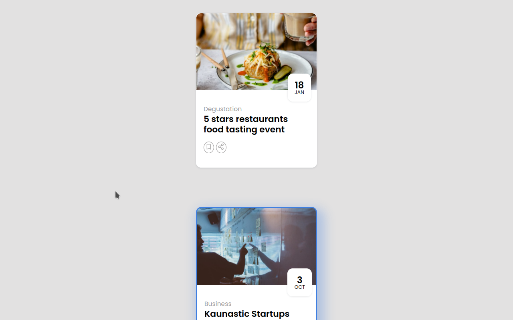 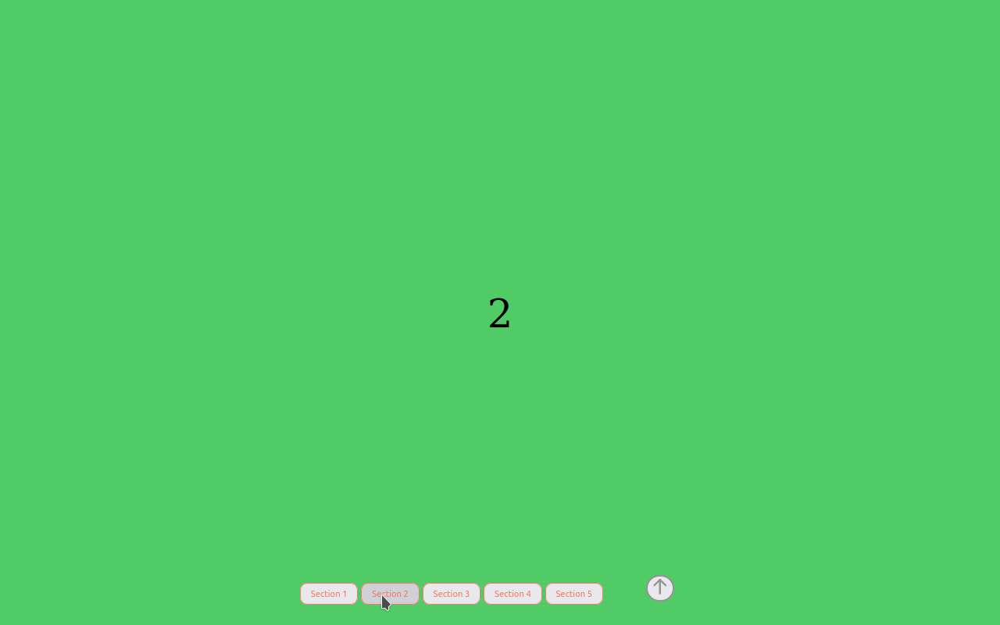
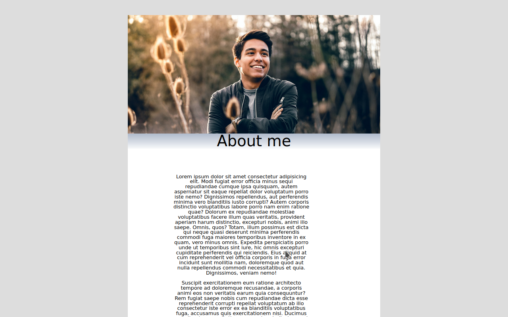
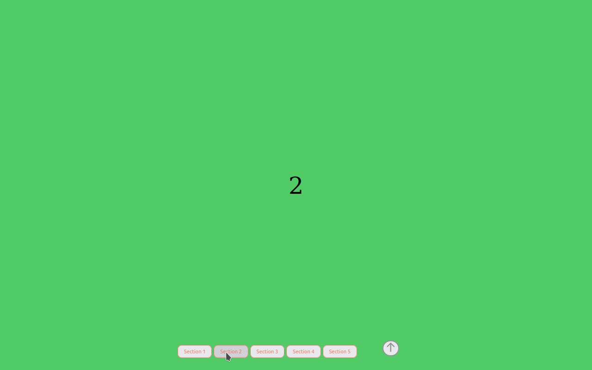
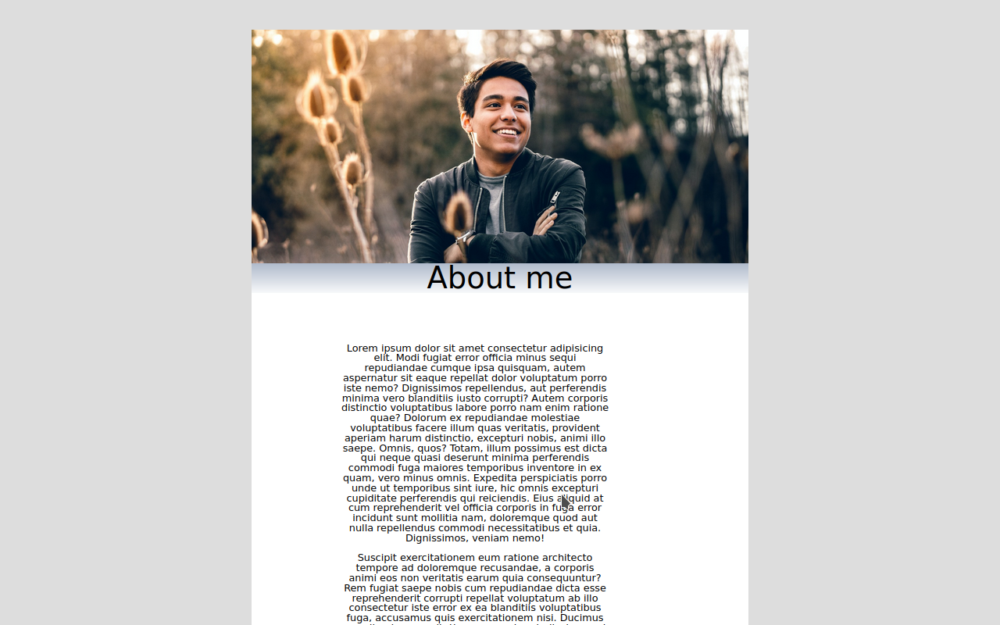
Naudojant Flex
Dar užduotėlės naudojant flex
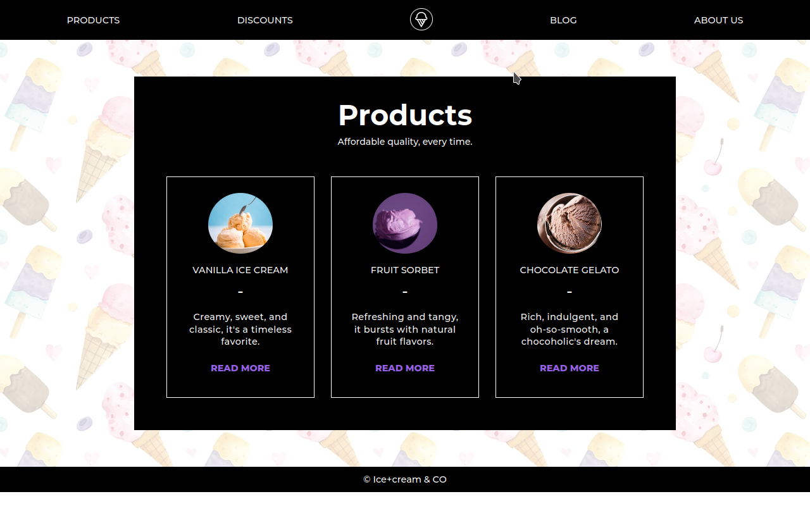 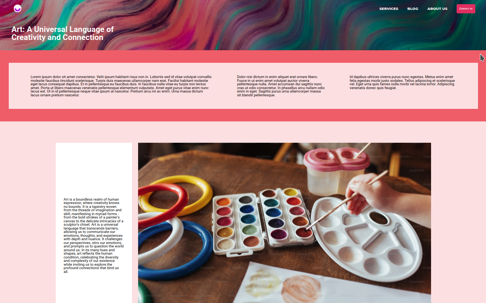 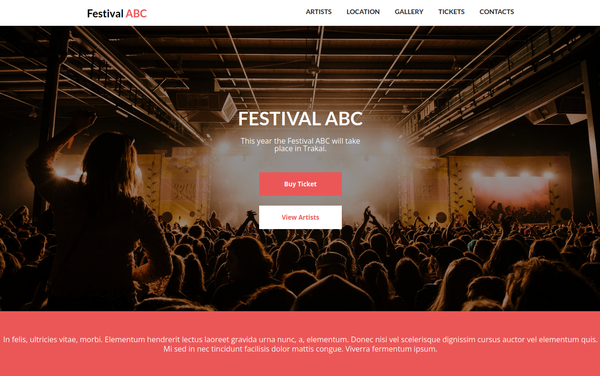Naudojant Grid
Smulkūs pratimai
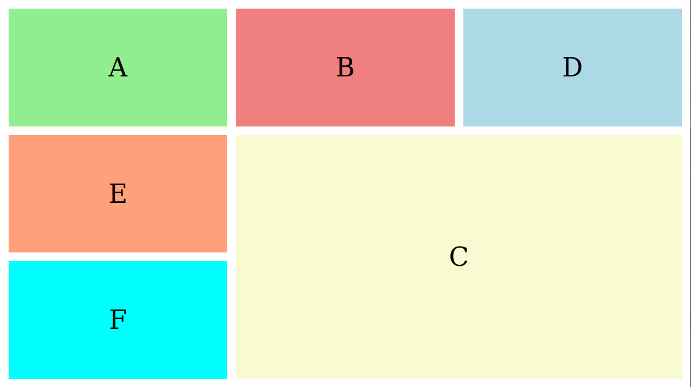 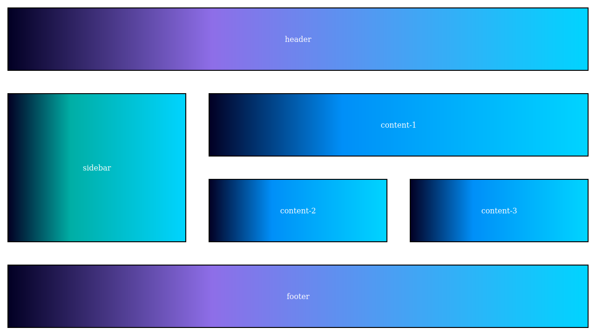 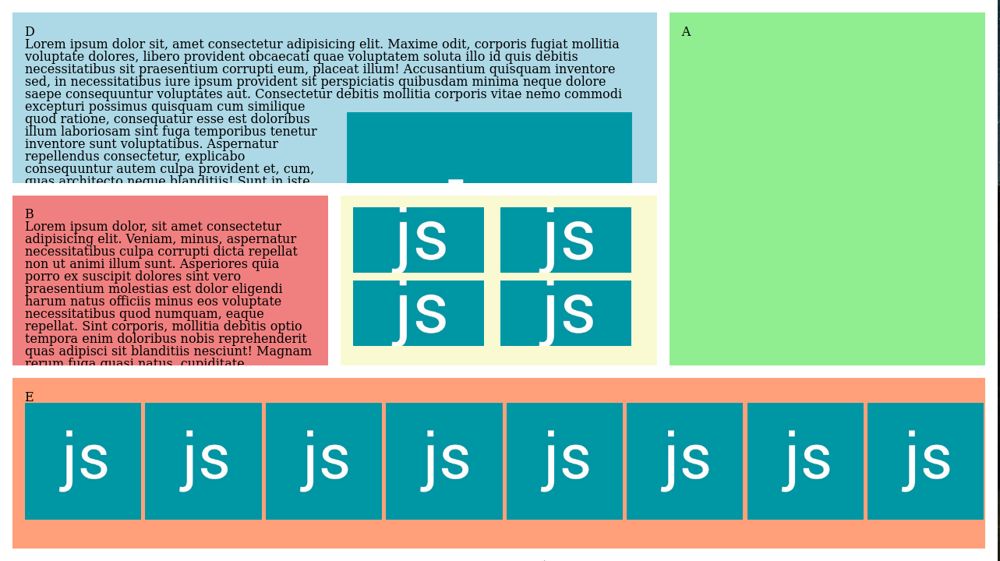 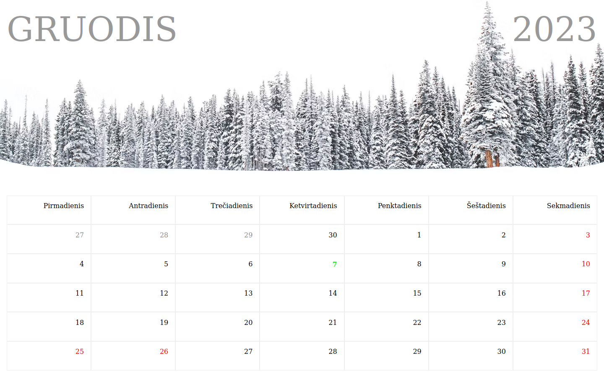 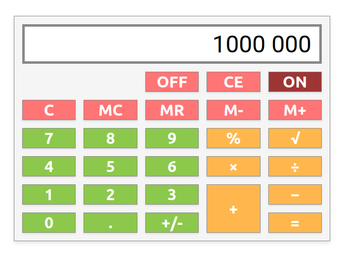